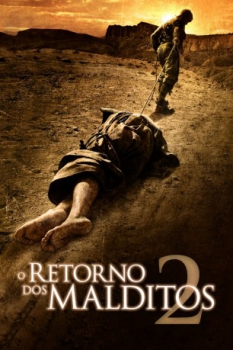

O Retorno dos Malditos (2007)


Help isn't coming.

Avaliação (TMDb):


5.5/10 (956 votos)
Avaliação (Usuário):
Outro Título:The Hills Have Eyes II
País:United States, 89 minutos
Idiomas falados:Inglês, Espanhol, Português
Gênero(s):Terror, Suspense
Diretor(s):Martin Weisz
Codec:MPEG-2 (DVD)
Número: 4063
Sinopse:
Grupo da Guarda Nacional tem que lutar contra mutantes em seu último dia de treinamento no deserto. Sequência do terror ”Viagem Maldita”, que por sua vez é refilmagem de ”Quadrilha de Sádicos”, feito por Wes Craven em 1977.
Elenco:
Michael McMillian, Flex Alexander, Jacob Vargas, Jessica Stroup, Michael Bailey Smith, Archie Kao, Jay Acovone, Jeff Kober, David Reynolds, Philip Pavel
Tipo de mídia: DVD5,
Legendas: Inglês, Espanhol, Português,
Alugado: Não
Tela: 2.35:1